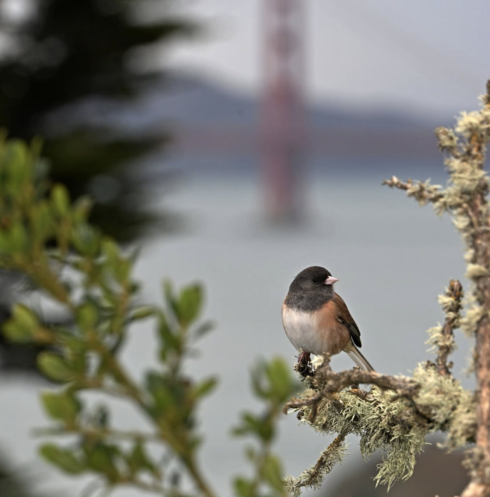
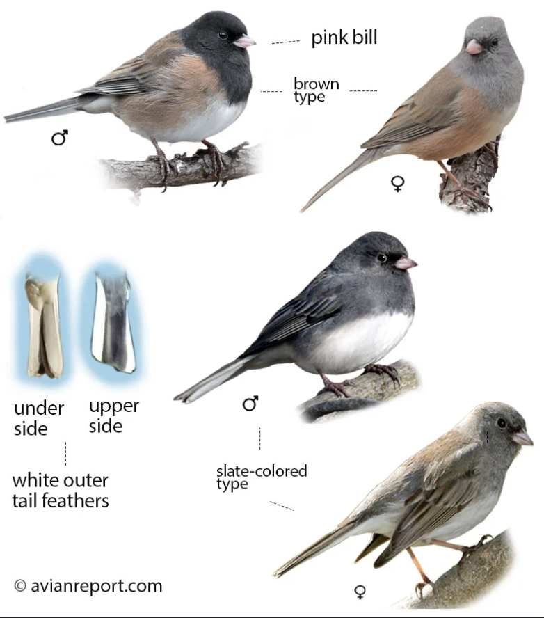

Dark-eyed Junco is a small, slate-gray songbird with a crisp white belly and a flashing white outer tail that’s easy to spot in flight. Common in San Francisco’s parks and gardens—especially in fall and winter—it often hops along the ground in search of seeds, giving soft ticking calls as it moves.
Dark-eyed Juncos are known for their gentle, curious nature and are often seen in small groups. They are active and social birds, especially during the non-breeding season when they form flocks. These birds are also recognized for their distinctive white outer tail feathers that flash during flight, making them easy to identify in the wild.
Dark-eyed Juncos are small, sparrow-sized birds (approx. 6 inches) often called "snowbirds" for their gray, brown, and white plumage. Key identifiers include a dark gray or brownish "hood" contrasting with a white belly, a distinct pinkish-white bill, and prominent white outer tail feathers that flash during flight.

Dark-eyed Juncos are common, year-round residents in San Francisco, particularly abundant in fall and winter. They inhabit varied environments including the Presidio's forests, coastal scrub, and annual grasslands, as well as landscaped lawns, parks, and residential neighborhoods. They are often found hopping on the ground or in low, brushy areas.
Dark-eyed Juncos are ground foragers, often seen hopping and scratching in leaf litter for seeds. They are social birds, frequently forming flocks outside of breeding season. During court
Dark-eyed Juncos primarily eat seeds, especially in fall and winter, foraging on the ground for grass seeds, weed
Dark-eyed Juncos are often called "snowbirds" because they are commonly seen in snowy conditions. They have a distinctive "white flash" on their tail that is visible when they fly, which helps birdwatchers identify them. During courtship